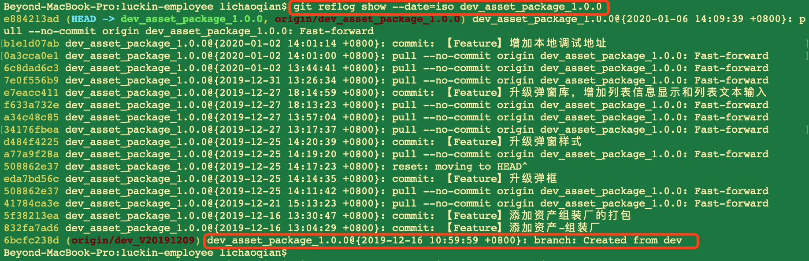

title: Git Search
date: 2013-01-07 10:51:37
categories:
查看分支创建时间
git reflog show --date=iso <branch name>
举例如图：

最老的那条记录即可以看出是从哪创建出来的。
但有时候记录太多，滑动太长，可以直接使用如下命令，直接查看
git reflog dev_environment | grep "Created from"
如果是feature分支
git reflog show --date=iso feature/设备小程序